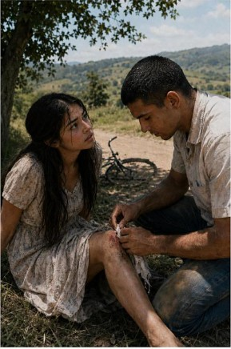

Mary was a beautiful and intelligent young woman of eighteen, living in a quiet village nestled between green hills and golden fields. Every morning, the air smelled of wildflowers and dew, and the sound of distant roosters echoed across the valley. Mary loved these mornings — they gave her a sense of peace and belonging. She would ride her old bicycle down the winding country paths, her long hair fluttering in the breeze, her heart light with dreams of the future.
But that sunny afternoon changed everything.
As she pedalled down a gentle slope, a loose stone rolled under her front tire. The wheel slipped — and before she could react — bang! Mary crashed to the ground. The sudden pain shot through her knees, leaving her breathless. Dust clung to her dress, and tears welled in her eyes. She sat there, trembling, staring at the blood trickling down her leg, feeling small and helpless against the wide, empty road.
Just then, a taxi slowed to a stop nearby. Inside sat Paul — a young university student and football player — tall, warm-eyed, and full of life. He was on his way to visit his Aunt Jane in the same village. From his window, he had seen her fall. Without hesitation, he told the driver to stop.
Paul stepped out quickly. “Are you alright?” he asked, his voice soft yet full of concern.
Mary tried to stand but stumbled. “I—I think I’m fine,” she whispered, though her voice trembled.
Paul knelt beside her, pulling a small bottle of water from his bag. “Hold still,” he said gently as he cleaned her wounds. His touch was careful, respectful — yet somehow comforting. “Don’t worry,” he added with a smile. “You’ll be fine. Just a few scrapes.”

Mary’s heart raced — not from the fall, but from the kindness in his eyes. “Thank you,” she said softly, almost afraid to meet his gaze.
Paul offered to walk her home, pushing her bicycle beside them. Along the way, they talked — about the village, the hills, and his studies in the city. He had a warm laugh that made her forget the pain. Before parting, he hesitated, then asked, “Would it be alright if I check on you later? Just to make sure you’re okay?”
She hesitated, and then nodded. “Yes… that would be nice.”
That evening, Mary’s phone buzzed for the first time that day.
Hello, lovely. How are you feeling now?
Mary’s lips curled into a shy smile. Her heart fluttered.
I’m better, thank you.
From that night onward, Paul’s messages became a rhythm in her life.
Good morning, Mary. I hope today brings you smiles. Don’t forget to rest your knees. You’re stronger than you think.
His words were simple, but they carried warmth — the kind that reached deep into her heart. Each message felt like a secret gift, a small light shining just for her.
Days turned into weeks, and without realizing it, Mary began to wait for his messages. She would check her phone with quiet excitement every morning. She caught herself smiling for no reason, her heart whispering his name even in silence.
But her secret was not to last.
One afternoon, her elder sister Martha borrowed her phone to make a call — and just then, a message appeared.
I miss hearing from you. Sorry I’ve been quiet. I was helping Father on the farm. I think about you often.
Martha froze. “Mary! Who is this?” she demanded, her eyes wide.
Mary’s face turned pale. “It’s… just a friend,” she stammered.
“A boy?” Martha’s voice rose. “Do you have any idea what Mother and Father would say? They forbid us from speaking with strangers — especially men!”
Before Mary could explain, Martha’s anger flared. She slapped Mary across the cheek — a sting that hurt far less than the shame in her heart. Tears filled Mary’s eyes, but she didn’t fight back.
“Please, Martha,” she pleaded, trembling. “Don’t tell them. I’ll do anything. I’ll help you with the chores — please.”
Martha glared at her for a long moment, torn between anger and pity. Finally, she said nothing and walked away.
In the days that followed, Mary kept her promise. She rose early to fetch water, helped with cooking, and joined Martha in the fields. Slowly, the tension between them melted. For the first time in years, the sisters began to laugh together again. They shared secrets by lamplight and sang while washing clothes by the creek. Their parents watched with joy, never suspecting the hidden truth that had drawn their daughters closer.
And still, Paul’s messages came — quieter, tenderer than before.
I hope your knees are healing. You’re stronger than you realize.
Sometimes, I think of that afternoon and how fate brought us together.
Mary’s heart swelled each time. She had never known love before — the kind that made your chest ache and your smile linger. Sometimes, she would sit by her window, gazing at the stars, wondering if Paul was looking at the same sky.
She knew her world was small — a village where gossip spread faster than the wind — but her heart had found something vast and beautiful.
She never forgot the day she fell — how pain and fear had brought her to someone who made her feel seen, understood, and cherished.
And though life in the village went on — simple, quiet, unchanged — Mary carried a secret flame inside her heart. The memory of her first love — tender, unexpected, and unforgettable — burned softly there, lighting her soul every time she thought of Paul.
End of Chapter 1